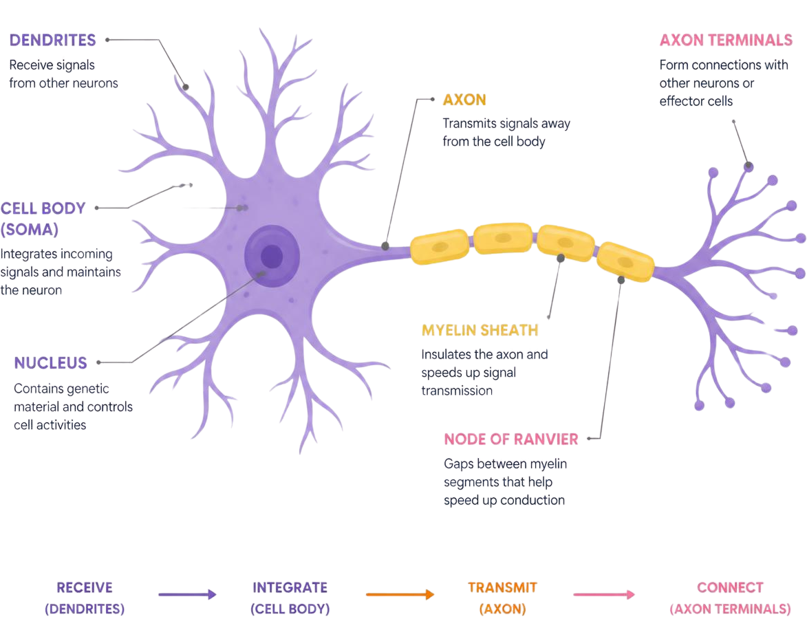
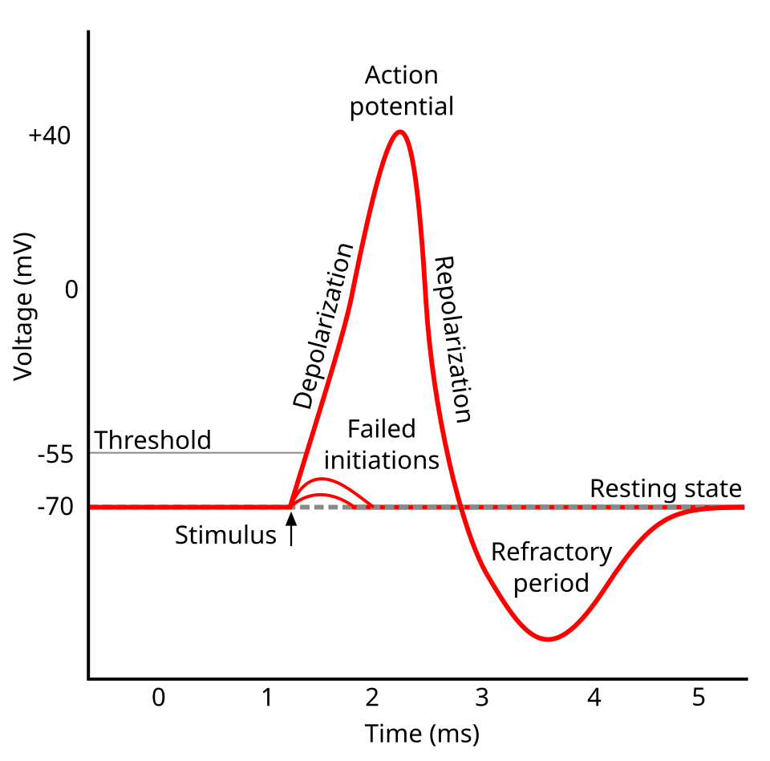
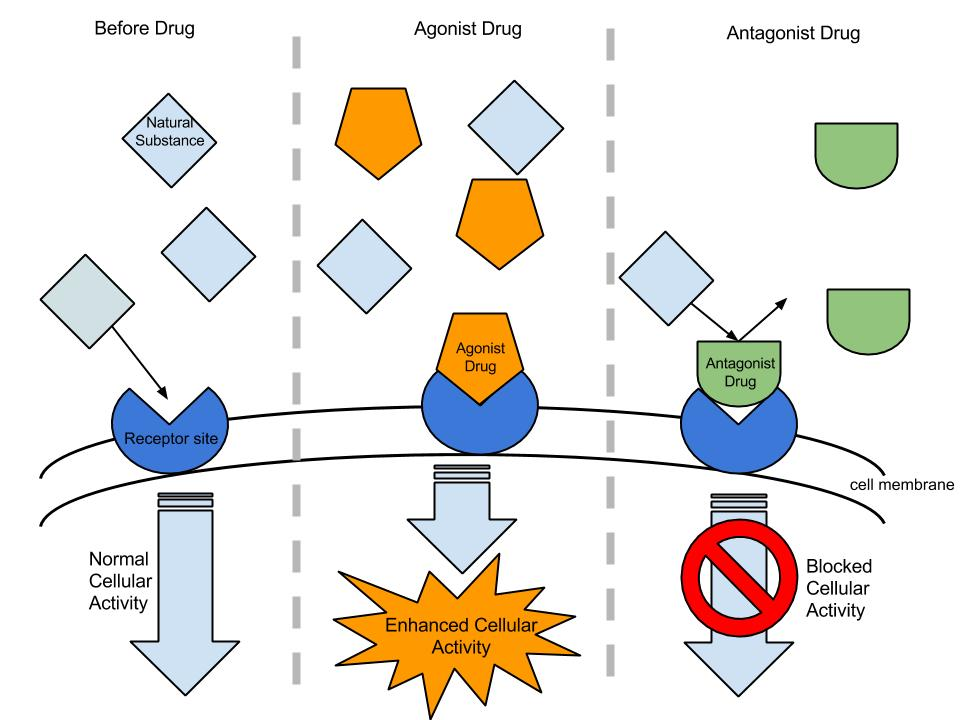

The Big Picture: The Electrical and Chemical Symphony
If your nervous system is a vast communication highway, the data traveling on it isn’t made of standard mechanical parts, it consists of lightning-fast electrical impulses and intricate chemical whispers. Every single thought, gut-wrenching emotion, complex memory, and split-second reflex you experience relies entirely on these localized cellular conversations.
Because this topic is exceptionally deep and high-yield on the AP Psychology exam, we break it down into three logical parts:
- The Structure of the Neuron
- How an individual cellular unit is anatomically structured to generate biological electricity.
- Chemical Messengers
- How these units use neurotransmitters and hormones to pass signals across physical gaps.
- Psychoactive Drugs
- How external chemical substances can alter, mimic, or completely hijack this communication system.
All structural definitions and content objectives in this study guide are meticulously paired with the official curriculum framework found in Topic 1.3 to ensure absolute alignment with exam day standards. Let's decode the neuron.
1.Cellular Anatomy and the Spark of Life
To understand how our brain handles information, we must start with the microscopic framework that builds the entire nervous system.
The Microscopic Substructure: Neurons and Glial Cells
The cellular world of the brain is populated primarily by two classifications of cells. The core communicators of the nervous system are Neurons, which are specialized nerve cells that transmit information throughout the body using electrical and chemical signals. However, these stars of the show cannot function alone. They are constantly supported by Glial Cells, which act as the vital stage crew. These glial cells work tirelessly behind the scenes to support, nourish, and protect the neurons by cleaning up cellular waste, delivering essential nutrients, and constructing protective insulation.
The Anatomy of a Neuron
Information flows through an individual neuron in one fixed direction, processing chronologically through distinct structural landmarks:
- Dendrites
- Branch-like extensions of a neuron that receive incoming signals from other neurons and transmit them toward the cell body (soma). They serve as the cellular "ears."
- Soma
- The part of a neuron that contains the nucleus and serves as the cell’s life-support center, processing incoming information before passing it to the axon. This acts as the cell's internal command headquarters.
- Axon
- The long, slender extension of a neuron that carries electrical impulses away from the cell body to other neurons, muscles, or glands. This is the biological transmission cable.
- Myelin Sheath
- A fatty insulating layer that surrounds many axons, speeding the transmission of electrical impulses through the neuron.
- Axon Terminal
- The end of an axon where neurotransmitters are released into the synapse to communicate with the next cell. These act as the cellular "mouths."
When these structural pathways decay, the physical consequences are striking. For example, Multiple Sclerosis is a neurological disease in which the immune system mistakenly damages the myelin sheath of neurons, disrupting communication between the brain and the rest of the body, which leads to a progressive loss of motor control. Similarly, Myasthenia Gravis is an autoimmune disorder in which antibodies block or destroy receptors for acetylcholine at the neuromuscular junction, leading to profound muscle weakness and fatigue.

The Neural Spark: How a Neuron Fires
How does a localized message travel from a dendrite down to an axon terminal? It requires a complex, highly regulated cycle of electrical and chemical events. When a neuron is inactive, it sits at its Resting Potential, maintaining a stable, negative electrical charge by balancing ions inside and outside the cell. In this polarized state, positive sodium ions wait outside while negative charges rest inside. When an incoming message arrives, it must push the neuron's electrical charge to a specific mathematical line called the Firing Threshold. If it hits this line, Depolarization occurs: positive sodium ions flood into the cell, making the inside less negative. This sudden shift triggers a rolling domino effect down the axon known as an Action Potential, a brief electrical impulse that transmits the signal. Importantly, this follows the All-or-Nothing Principle; the neuron either fires with a full-strength response or doesn't fire at all. A stronger stimulus simply causes the neuron to fire more frequently, not more powerfully. Once the signal is sent, the neuron enters a Refractory Period, a brief phase of inactivity where it pumps positive ions back outside to reset its electrical balance and cannot fire again. Finally, the chemical messengers used to bridge the gap to the next cell are reabsorbed by the sending neuron in a process called Reuptake, which clears the synapse and regulates signal strength.

Immediate Action: The Reflex Arc
Certain urgent situations require reactions to occur so fast that taking the time to send signals to the brain would cause severe tissue damage. This immediate physical preservation is governed by the Reflex Arc, a neural pathway that controls a reflex action, involving an automatic, rapid response to a stimulus. It relies on three specific neurons working in perfect sync:
- Sensory Neurons
- Neurons that carry incoming information from the sensory receptors to the brain and spinal cord (Afferent neurons). They detect environmental stressors, like a boiling stove.
- Interneurons
- Neurons located in the central nervous system that connect sensory neurons to motor neurons and help process and interpret information. They reside right inside your spinal cord and make an instantaneous loop decision without waiting for the brain.
- Motor Neurons
- Neurons that carry outgoing information from the brain and spinal cord to the muscles and glands (Efferent neurons). They instantly order your arm muscles to contract and pull away.
2.The Whispering Chemicals (Neurotransmitters and Hormones)
Once an electrical action potential races down to the Axon Terminal, it reaches a physical gap: the synapse. Electricity cannot jump this void. To get across, the message must change from an electrical spark into a chemical formula.
The Chemical Languages of the Brain: Neurotransmitters
When an electrical signal reaches the end of a neuron, it triggers the release of Neurotransmitters: chemical messengers that cross the synaptic gap to carry the signal to the receiving cell. Think of neurotransmitters as biological keys tossed across a void; they only work if they can perfectly fit into the specific, custom-shaped locks (receptors) on the receiving neuron. Neurons release these specific molecular packages across the synapse, and they fall into two foundational categories:
- Excitatory Neurotransmitters
- Neurotransmitters that increase the likelihood that the receiving neuron will fire an action potential by pushing its internal environment closer to the firing threshold.
- Inhibitory Neurotransmitters
- Neurotransmitters that decrease the likelihood that the receiving neuron will fire an action potential by calming the cell down and keeping it polarized.
The AP Psychology course requirements demand a deep familiarity with these foundational neurotransmitters:
- Acetylcholine
- A neurotransmitter that enables communication between neurons and muscles and also plays an important role in learning and memory.
- Dopamine
- A neurotransmitter involved in movement, motivation, reward, and pleasure, and linked to disorders such as Parkinson’s disease and schizophrenia.
- Serotonin
- A neurotransmitter involved in mood, sleep, appetite, and emotional regulation, with low levels often linked to depression.
- Norepinephrine
- A neurotransmitter and hormone involved in alertness, arousal, attention, and the body’s stress response.
- GABA
- The brain’s primary inhibitory neurotransmitter, which reduces neural activity and helps regulate anxiety, sleep, and muscle tension.
- Glutamate
- The brain’s primary excitatory neurotransmitter, involved in learning, memory, and neural communication.
- Endorphins
- Natural, opiate-like neurotransmitters linked to pain control and to pleasure.
- Substance P
- A neurotransmitter involved in the transmission of pain messages to the brain. It behaves like an alarm bell letting you register injuries.
The Slow-Moving System: Hormones
While neurons utilize rapid-fire neurotransmitters over microscopic synapses, your endocrine system works across a much broader canvas by deploying Hormones. These are chemical messengers that are manufactured by the endocrine glands, travel through the bloodstream, and affect other tissues. Because they ride through your blood vessels rather than jumping microscopic gaps, they take significantly longer to reach their destination, but their systemic effects linger far longer than a brief neural zap. The essential hormones you must track for the exam include:
- Melatonin
- A hormone that helps regulate sleep and the body’s circadian rhythms.
- Oxytocin
- A hormone involved in social bonding, trust, childbirth, and breastfeeding.
- Adrenaline
- A hormone released during stress that increases heart rate, breathing, blood pressure, and energy as part of the body’s fight-or-flight response.
- Ghrelin
- A hormone produced mainly in the stomach that stimulates hunger and signals the brain to increase food intake.
- Leptin
- A hormone produced by fat cells that helps regulate hunger and body weight by signaling to the brain that the body has enough stored energy.
Brain Hacks: Mnemonics to Master the Messengers
To help lock these chemical messengers into your long-term memory, utilize these classic classroom mnemonic shortcuts:
- Adrenaline
- Think of ADrenaline as ADDing heartbeats to make your heart go faster during stress.
- Ghrelin
- Released when your stomach is empty and hungry, it's GHRowling!
- Endorphins
- These natural chemicals help your body END pain and make you feel good.
- Leptin
- Signals your brain to stop eating because enough food has LEPT INto your stomach.
- AcetylcholineACh
- To ACE a test (memory) or serve an ACE in tennis (muscle action), you need ACEtylcholine.
- Substance P
- When you are experiencing Pain, the message has been delivered directly by Substance P.
- Dopamine
- "I want it! It is MINE, MINE, MINE!" because the intense feeling of reward and pleasure comes from dopaMINE.
- GABA
- Puts the brakes on your central nervous system. If your neural activity is out of control and disrupted, you need to Get A Brake Adjustment.
- Serotonin
- If you are in a ROTIN (rotten) mood, it is likely because your seROTONin levels are off.
- Glutamate
- Imagine being completely GLUED to your MATE because you are so incredibly excited (since GLUTAMATE is the brain's most abundant excitatory neurotransmitter).
3.Altering the Symphony (Psychoactive Drugs)
Because our conscious states depend completely on precise biological balances, introducing foreign chemical structures into the bloodstream can dramatically skew how we perceive reality, feel, and behave. These foreign substances are known as Psychoactive Drugs: chemicals that affect the central nervous system and alter mood, perception, consciousness, or behavior by directly influencing neurotransmitter activity in the brain.
Synaptic Mechanics: How Drugs Interact
Exogenous substances (drugs) alter synaptic communication primarily by interacting with neurotransmitter receptors or manipulating the synapse environment. They generally fall into three categories:
- Agonists
- These chemicals are structurally similar enough to a natural neurotransmitter to fit into its specific receptor site and activate it. They mimic or amplify the normal effects. Example: Heroin is an opioid agonist; it acts like natural endorphins to produce profound pain relief and euphoria.
- Antagonists
- These chemicals bind to a receptor site but do not activate it. Instead, they block the dock, preventing the natural neurotransmitter from getting in and doing its job. Think of them like a broken key stuck in a lock. Example: Naloxone (Narcan) is an opioid antagonist. It violently knocks opioids out of the receptor sites and blocks them from re-entering, immediately reversing an overdose.
- Reuptake Inhibitors
- Instead of binding to the receiving neuron's receptors, these chemicals block the "vacuum cleaners" (transporters) on the sending neuron. This prevents the normal reabsorption (reuptake) of neurotransmitters, leaving a flood of chemicals in the synapse to repeatedly hit the receiving receptors. Example: SSRIs (Selective Serotonin Reuptake Inhibitors) like Prozac keep serotonin in the synapse longer to elevate mood, while Cocaine violently blocks dopamine reuptake to create an intense high.

The Core Drug Classifications
The AP Psychology syllabus groups psychoactive chemicals into four primary classifications based on their systemic impacts:
- Stimulants
- Psychoactive drugs that increase activity in the central nervous system, leading to heightened alertness, energy, and arousal.
- Caffeine
- A stimulant drug found in coffee, tea, and soda that increases alertness.
- Cocaine
- A powerful stimulant drug that increases dopamine levels in the brain by blocking its reuptake, leading to intense feelings of euphoria, energy, and increased alertness.
- Depressants
- Psychoactive drugs that slow down activity in the central nervous system, reducing arousal, anxiety, and bodily functions such as heart rate and breathing.
- Alcohol
- A depressant drug that slows central nervous system activity, impairing judgment, memory, coordination, and reaction time.
- Hallucinogens
- Psychoactive drugs that alter perception, mood, and thought processes and can cause hallucinations, or sensory experiences that are not based in reality.
- Marijuana
- A mild hallucinogen that can amplify sensitivity to colors, sounds, tastes, and smells, but also relax and disinhibit.
- Opioids
- A class of drugs that reduce pain and produce feelings of pleasure by acting on the brain’s opioid receptors, often by mimicking natural endorphins.
- Heroin
- An opioid drug that is converted into morphine in the brain and produces intense pain relief and euphoria by activating opioid receptors.
Long-Term Neuroadaptation
When psychoactive drugs are consistently introduced, the brain initiates defense mechanisms to protect its internal baseline, leading to chronic physiological adjustments:
- Tolerance
- The diminishing effect with regular use of the same dose of a drug, requiring the user to take larger and larger doses to experience the effect. The brain actively reduces its own receptor sites or natural neurotransmitter production to fight back against the flood of external chemicals.
- Addiction
- Compulsive craving of drugs or certain behaviors (such as gambling) despite known adverse consequences.
- Withdrawal
- The discomfort and distress that follow discontinuing an addictive drug or behavior. When the drug is suddenly cut off, the brain is caught completely unprepared, leaving the body struggling to function in a temporary state of chemical deficiency.
4.Don't Trip Up! (Common Misconceptions)
⚠️ The Action Potential Misconception: Students often assume that an intense sensory input (like a loud scream) causes a "stronger" or "larger" action potential than a soft whisper. It does not! An action potential follows the All-or-Nothing Principle: like flushing a toilet or firing a gun, it goes at full strength every single time. Intensity is communicated entirely through the number of total neurons firing and the frequency at which they fire.
⚠️ Agonists vs. Antagonists: Remember that an Agonist acts as an assistant by amplifying or copying a neurotransmitter's role. An Antagonist serves as the antagonist in a story, it fights, blocks, or reduces the neurotransmitter's access to the dock.
⚠️ Afferent vs. Efferent Pathway Confusion: Sensory neurons travel up toward the central nervous system (Arriving), making them Afferent. Motor commands exit the spinal cord (Exiting), making them Efferent. Use the acronym SAME to keep them straight: Sensory = Afferent, Motor = Efferent.
5.Key Terms in This Topic
6.Practice This Topic
Test yourself on exactly what you just read. The numbers on each button show how much material is waiting for you.
The same self-check questions that close your guided notes. Find out whether neurons, neurotransmitters, and drugs stuck.
Start Quick Check →Flip through the key terms from this topic, including agonists, antagonists, and the major neurotransmitters.
Open the deck →AP-style multiple choice on neural firing, neurotransmitters, hormones, and drug effects, with an explanation after every answer.
Take the quiz →